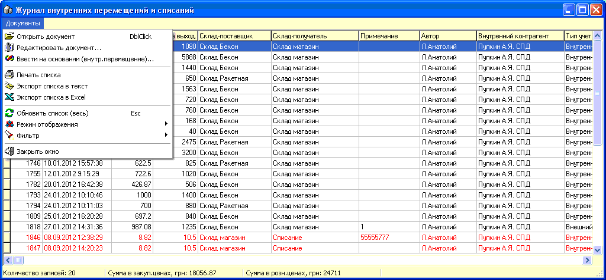

Данный журнал позволяет работать с сохраненными
ранее Внутренними Перемещениями (выделены стандартным черным
цветом) и Списаниями
(выделены красным цветом). Внутреннее перемещение привязанное к Счету с резервированием маркируется зеленым
цветом.
Ниже показан вид журнала и его главного меню
(есть также контекстное - правой кнопкой мыши).

Так же как и в приходных накладных при
редактировании документа изменения табличной части сохраняются
немедленно, а заголовка по факту выхода из накладной.
На основании одного внутреннего перемещения можно
создать другое внутреннее перемещение на другой склад.
Поскольку внутренние перемещения, списания,
расходные накладные и возвраты поставщику являются внутренними документами, то
посредством пункта меню "Режим отображения" можно переходить из одного
журнала в другой.
Фильтр журнала позволяет отобрать документы
с задаными параметрами: